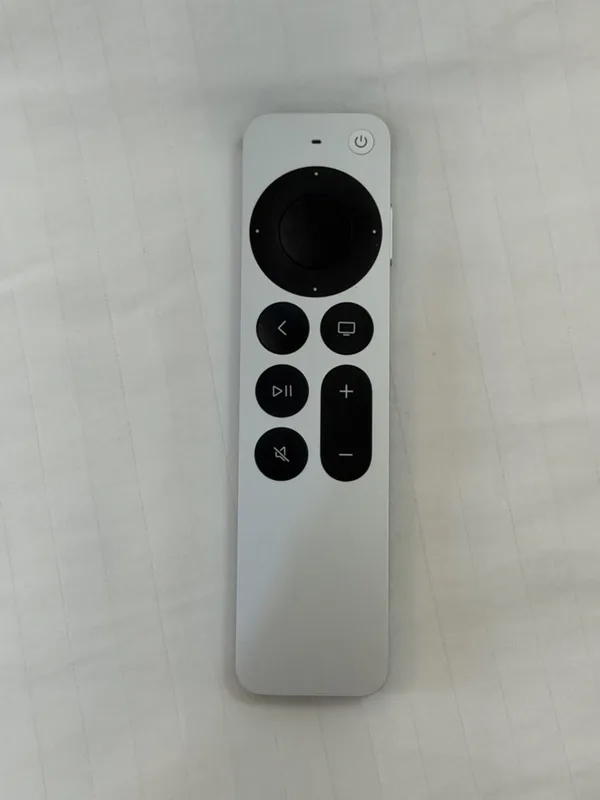
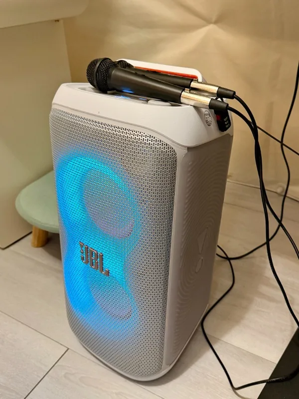
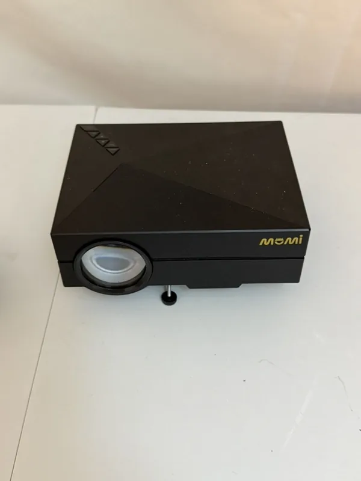
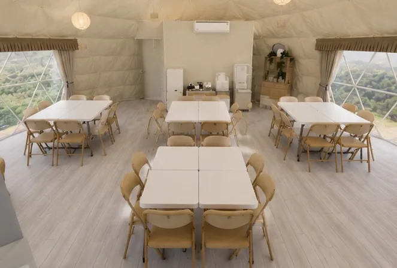
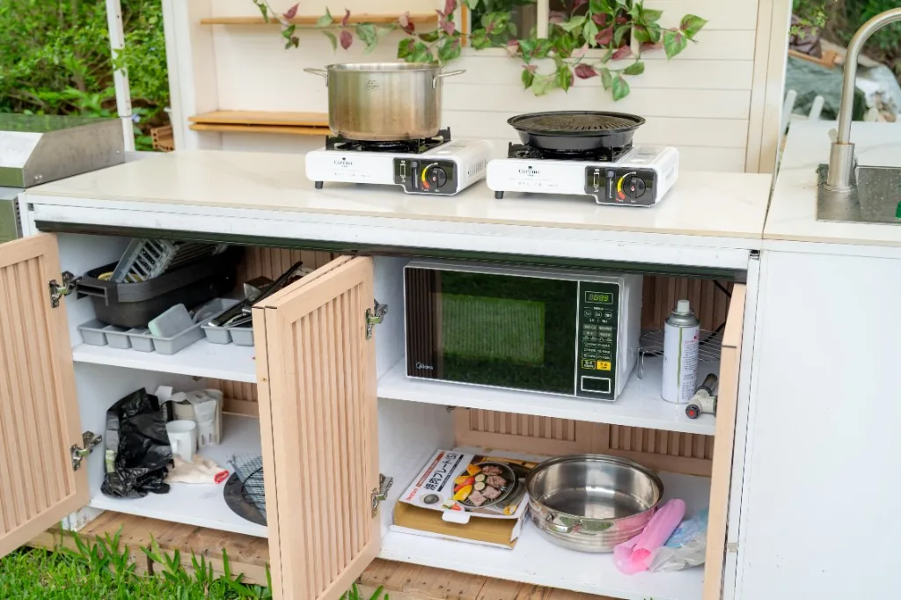
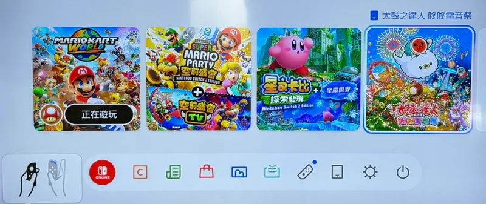
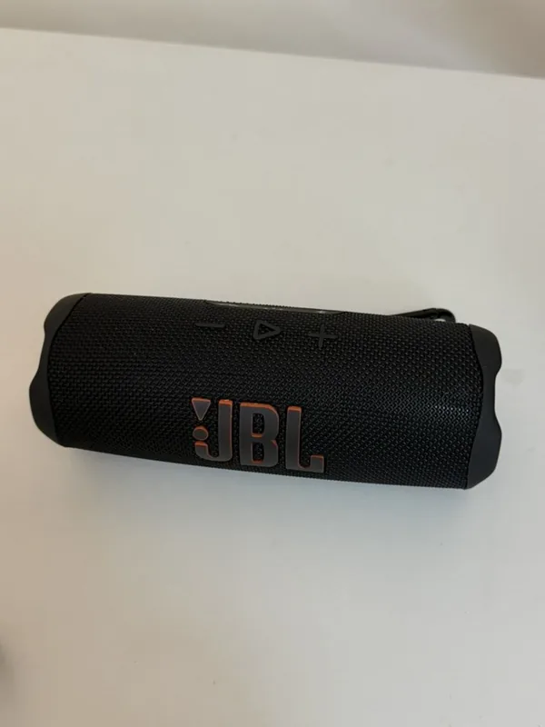

多人同樂
Switch 遊戲
四支控制器適合一起玩。常見遊戲如瑪利歐賽車、瑪利歐派對、星之卡比、太鼓之達人；以現場主機為準。
室內 × 戶外｜活動設備
從 Switch、唱歌、電動麻將到戶外電影、烤肉與草地遊戲，室內戶外都準備好，大家只要帶著好心情來玩。
最新活動包場價格請見首頁公告。15:00～24:00，兩三位好友的小聚到 20 人內派對都歡迎，停車空間可安排 6 台車。
方案設備
大家主要在熱氣球冷氣室內活動空間與兩片草地開心相聚，另一處室內空間會貼心保留作為臨時置物區。活動從 15:00 玩到 24:00，20 人內都很舒服；22:00 後適合切換成電影、桌遊、用餐與聊天的輕鬆節奏。
室內設備
四支控制器適合一起玩。常見遊戲如瑪利歐賽車、瑪利歐派對、星之卡比、太鼓之達人；以現場主機為準。

可播放活動影片、照片與串流影音。個人訂閱服務的帳號請自備，離場前請記得登出。

Apple Music 歌唱功能搭配電視歌詞、JBL 音響與麥克風，適合慶生、朋友與親子同樂。

可搭配唱歌、活動音樂與流程播放；音量與開放時段請依現場使用規範。

適合簡報、紀念影片、親子內容或活動音樂；連接方式與可使用區域依方案確認。

熱氣球室內活動空間可用餐、遊戲、唱歌與拍照，並提供冷暖空調與 Wi-Fi；另一處室內空間會保留作為活動置物區。
戶外玩法

兩片草地皆可安排戶外電影，適合晚間包場、生日影片與家庭觀影。戶外投影受雨勢、風勢與環境光影響，會依當日條件調整。

可安排烤肉與戶外聚餐。食材、燃料、耗材與使用方式請在預約時先確認。

兩片草地皆可料理與聚餐；備有冰箱、微波爐、卡式爐、基本鍋具、餐具與清潔用品，特殊器具及耗材請先詢問。

燈串亮起後，草地很適合親子遊戲、毛孩互動、散步、拍照與聊天，從傍晚一路玩到夜晚都很有氣氛。

可自備餐點、外送或安排聚餐活動；桌椅配置、餐飲設備與佈置動線請預先討論。
可安排親子遊戲、寵物互動、野餐、儀式與團體活動；道具及動線請先確認。
設備細節

